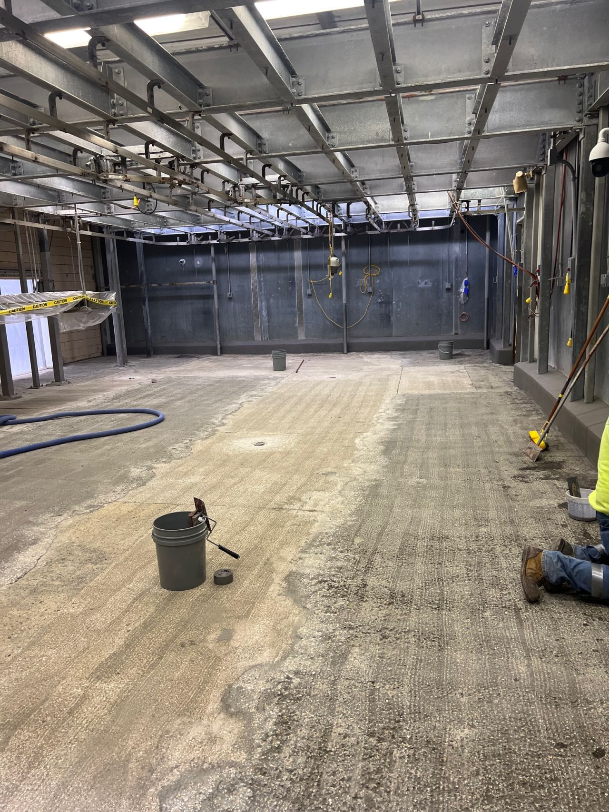
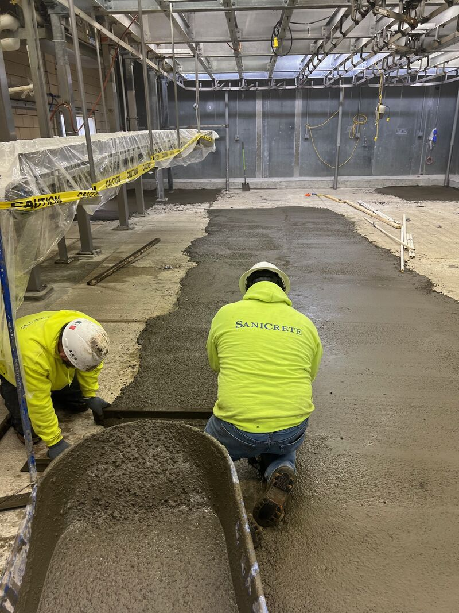
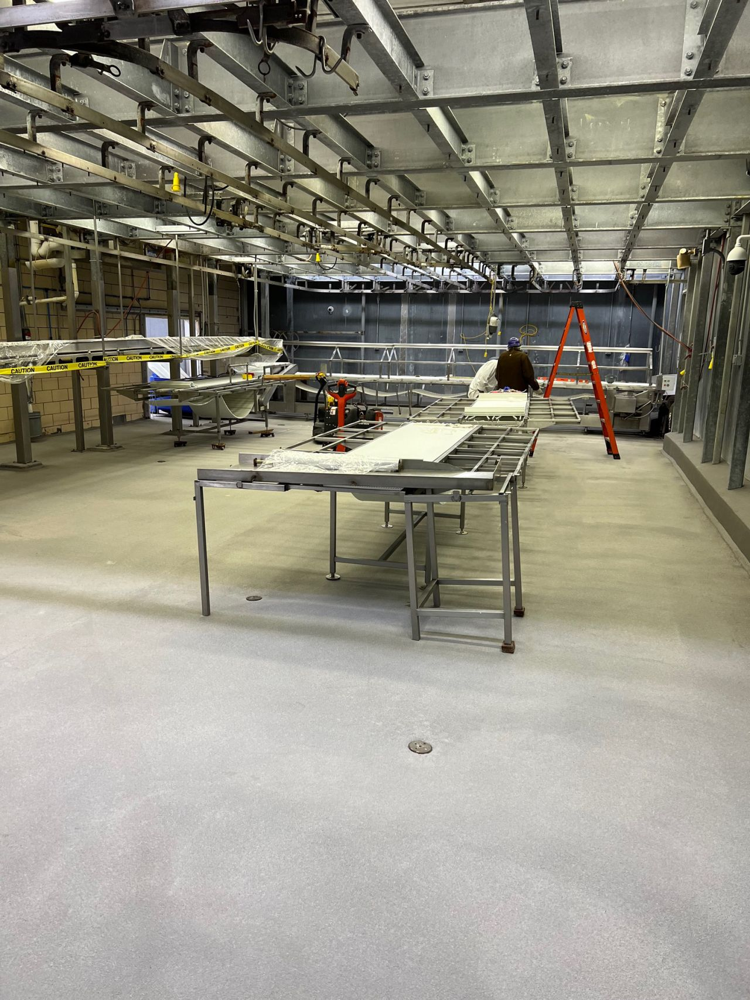

If water is pooling on your processing floor after washdown, you don't just have a drainage problem. You have a food safety problem. Standing water is the single fastest way to create ideal conditions for bacterial growth in a food processing environment.
The Problem with Flat Floors
Many food processing facilities were built with floors that are flat — or worse, have settled and developed low spots over decades of heavy use. In a standard commercial building, a flat floor is fine. In a food plant that gets hosed down multiple times a day, it's a liability.
Standing water harbors Listeria, Salmonella, and E. coli. It creates slip hazards. It accelerates floor deterioration. And it catches the eye of every USDA inspector who walks through your door.
Correcting Slope During Installation
The good news: sloping issues can be corrected during a new flooring installation. When we scarify and prep the existing substrate, we have the opportunity to build in the proper pitch to drains — typically 1/8" to 1/4" per foot, depending on the application.
Using SaniCrete PC polymer concrete, we can fill low spots and build up areas that need slope correction before installing the finish floor. This gives us a properly pitched substrate that moves water where it needs to go — to the drain, not into puddles.
Installation: Building It Right
Our crew hand-trowels every square foot, working the material to maintain the designed pitch throughout the room. It's not just about getting the floor flat — it's about getting the floor sloped correctly so water moves to the trench drains and floor sinks where it belongs.
The Result: No More Standing Water
A properly sloped, seamless floor eliminates standing water entirely. After washdown, water sheets to the drains. No puddles. No harborage points. No bacteria breeding grounds. Just a clean, dry floor ready for the next shift.
Products Used
- SaniCrete STX — 3/8" stainless steel reinforced cementitious urethane
- SaniCrete PC — Polymer concrete for slope correction and filling
- Sanitary Drains — Stainless steel trench drain systems